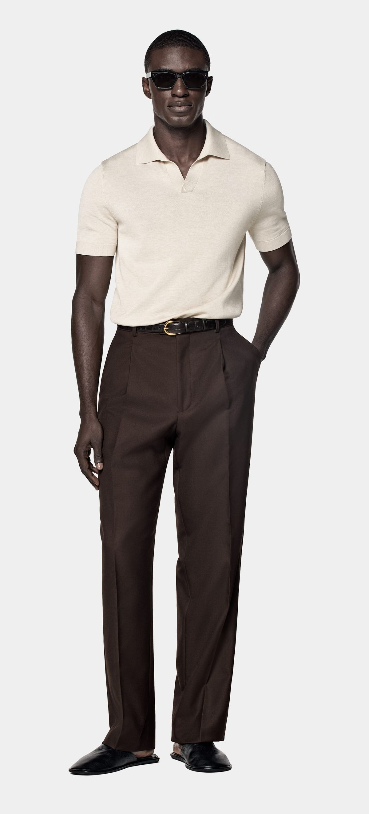

Conjunto Polo Beige
Combinación clásica con polo en tonos cálidos y pantalón de corte recto, inspirado en la sastrería italiana.
ConsultarElegancia discreta, materiales nobles y un estilo atemporal para quienes valoran lo clásico.
Ver detalleCombinación clásica con polo en tonos cálidos y pantalón de corte recto, inspirado en la sastrería italiana.
ConsultarDiseño sobrio con polo claro y pantalón negro de líneas rectas, ideal para ocasiones semi-formales.
LlamarUn clásico moderno: polo negro con pantalón marrón de corte perfecto. Inspiración old money para el día y la noche.
Ver FAQSe recomienda limpieza en seco y conservar en perchas de madera para mantener la forma original.
No. Por el momento, solo envíos a todo el país.
Cada look de Maison d’Or representa un homenaje a la elegancia clásica: cortes limpios, fibras naturales y un estilo que nunca pasa de moda.